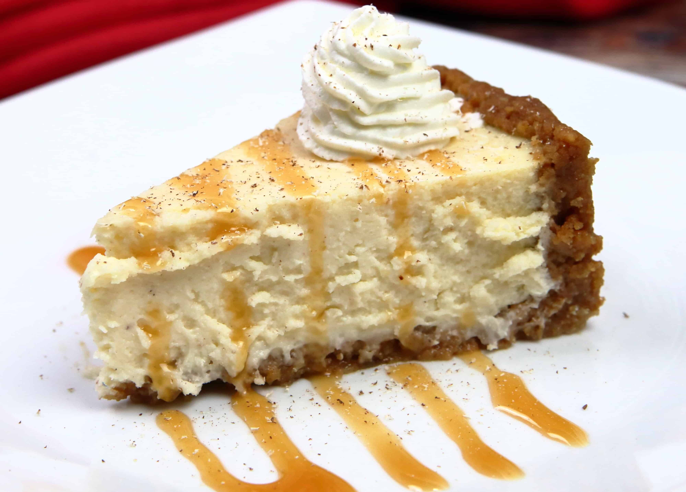

Eggnog Cheesecake

Eggnog Cheesecake
This eggnog cheesecake is delicious and perfect for eggnog lovers. The secret to a smooth cheesecake is to beat the cream cheese in a food processor for several minutes.
Make the season merry with eggnog cheesecake! Full of festive flavor, this eggnog cheesecake recipe is the best way to satisfy your sweet tooth this holiday season.
Ingredients
Crust
- 1 cup graham cracker crumbs
- 3 tablespoons melted butter/li>
- 2 tablespoons white sugar
Filling
- 3 (8 ounce) packages cream cheese, softened
- 1 cup white sugar
- 3/4 cup eggnog
- 3 tablespoons all-purpose flour
- 2 large eggs
- 2 tablespoons rum
- 1 pinch ground nutmeg
Steps
- Preheat the oven to 325 degrees F (165 degrees C).
- Make the crust: Mix graham cracker crumbs, melted butter, and sugar together in a medium bowl until well combined
- Press graham mixture into the bottom of a 9-inch springform pan
- Bake in the preheated oven for 10 minutes; transfer the pan to a wire rack and allow crust to cool. Increase the oven temperature to 425 degrees F (220 degrees C).
- While the crust is cooling, make the filling: Combine cream cheese, sugar, eggnog, and flour in a food processor; process until smooth. Blend in eggs, rum, and nutmeg.
- Pour eggnog mixture into cooled crust.
- Bake in the preheated oven for 10 minutes. Reduce the heat to 250 degrees F (120 degrees C) and continue to bake until edges are puffed and surface is firm except for a small spot in the center that will jiggle when the pan is gently shaken, about 45 minutes. Loosen the sides of the springform pan; let cheesecake cool before removing the rim completely.
- Enjoy!